🧩 Flux Project
Flux Project is a fast, reliable Minecraft Project & Resource Management Tool written in Rust.
Modern Minecraft management often feels cluttered. Flux provides a sleek, responsive, cross-platform GUI for browsing and installing any resource hosted on Modrinth, with automatic detection of compatible Minecraft versions and loaders.
🚀 Key Capabilities
- Unified Manager: One interface for mods, shaders, resource packs, datapacks, and plugins.
- Smart Detection: Automatic filtering for your specific Minecraft version and loader (Fabric/Quilt/Forge).
- One-Click Updates: Keep your entire library current with a single click.
- Performance First: Built in Rust to ensure the app stays out of your way while gaming.
⚙️ Note: Flux focuses on Modrinth resources for Minecraft: Java Edition.
Disclaimer
Flux Project is an independent project and is not affiliated, endorsed, or associated with Mojang AB, Microsoft Corporation, Modrinth, or Rinth Inc. All trademarks and copyrights belong to their respective owners. Flux is developed by a passionate few of Minecraft enthusiasts and is provided as-is without any warranties. Use at your own risk.
🚀 Installation
Getting started with Flux is straightforward. We provide pre-compiled binaries for Windows, macOS, and Linux.
1. Download
Head over to the GitHub Releases page and grab the latest version for your operating system.
2. Unpack and Run
The release is typically provided in a compressed format (zip/tar.gz).
- Unpack: Extract the contents of the downloaded folder to a location of your choice.
- Execute: Locate the
fluxexecutable and run it.
🛡️ Security Warnings
Since Flux is an independent, open-source project and is not "code-signed" with expensive certificates from Microsoft or Apple, your operating system may flag it as "untrusted."
This is a standard procedure for many open-source tools. Below is how to safely proceed:
Windows (SmartScreen)
Why this appears: Windows SmartScreen flags any executable that hasn't been downloaded by thousands of users yet or isn't signed by a registered corporation.
- When the blue "Windows protected your PC" popup appears, click "More info".
- A new button will appear. Click "Run anyway".
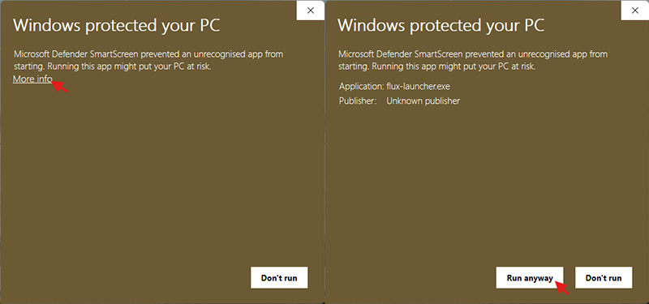
MacOS (Gatekeeper)
Why this appears: macOS Gatekeeper blocks apps that are not from the App Store or from "Identified Developers".
- If you see a '"flux" not Opened' message, click Done.
- Open System Settings (or System Preferences) > Privacy & Security.
- Scroll down to the Security section.
- You will see a message saying 'Flux was blocked to protect your Mac.' Click "Open Anyway".
- If you see another prompt saying 'Open "flux"?', click "Open Anyway" to confirm you want to run the app.
- Enter your password if prompted to confirm.
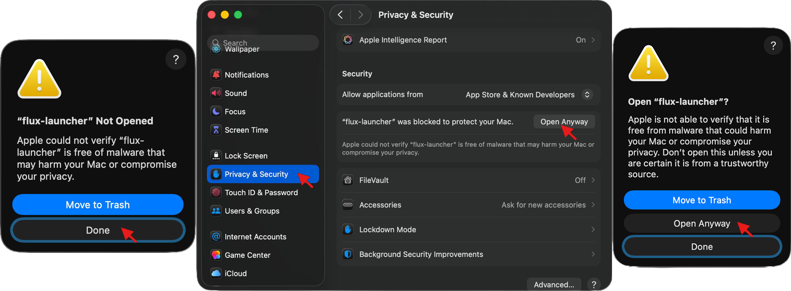
🛠️ Compile from Source
If you prefer not to use pre-compiled binaries, you can build Flux directly from the source code:
# Clone the repository
git clone https://github.com/allwepro/flux-project.git
cd flux-project
# Build and run in release mode
cargo run --release
🧭 Usage Overview
This section covers how to navigate and use the different components of Flux. Whether you are looking to launch the game or manage your mod library, you can find the specific guides below.
🚀 Launcher
The core component for launching Minecraft. This section details how to manage game profiles, select versions, and start your game sessions. Note: This feature is currently a Work In Progress.
📦 Resource Manager
The heart of Flux's utility. Learn how to browse, download, and update your Minecraft content. The Resource Manager allows you to organize your mods, resource packs, and other game assets efficiently.
💡 Tip: If you are new to Flux, we recommend starting with the Resource Manager to set up your first collection of mods.
Launcher
🚧 Work In Progress
The launcher functionality is currently under development.
📦 Resource Manager Overview
The Resource Manager is the core of Flux, designed for efficient organization and control of your Minecraft content. It features a dual-pane interface: a Sidebar for list management and a Main View for resource interaction.
⚙️ General Settings
- Resource Manager Settings: Configure the Resource Manager's behavior and access advanced options that apply specifically to the resource manager.
📂 Organization
- Lists: Learn to create, select, and manage your primary resource lists.
- Groups & Instances: Organize your sidebar by grouping lists and make instances for your different game profiles.
- Importing Resources: How to bring in existing content from files (including legacy formats), Modrinth Collections, or direct imports from Minecraft folders.
🛠️ Resource Control
- Toolbar & Search: Utilize the top bar for searching within your resource list, sorting, and executing bulk actions like "Download All".
- List Actions & Settings: Understand the specific actions available for the open list, including the List Settings, Export, Open Folder, Duplicate, Rename, and Delete.
- Managing Resources: Managing resource in a list.
- Dependencies & Archives: A detailed guide on managing resource dependencies, archiving resources, and handling unknown files.
⚡ Efficiency
- Productivity & Shortcuts: Boost your workflow with multi-select functionality, context menus, and keyboard shortcuts.
🚀 Get Started with Flux's Resource Manager!
Welcome to Flux! This guide will quickly show you how to create your first mod list, add resources, and get them downloaded. Let's get your Minecraft setup ready! As a first step you need to have Flux installed. If you haven't done that yet, check out our Installation Guide first. Then after successfully installing Flux, you can open the Resource Manager by clicking the "Resource Manager" text in the top left if it's not already open.
1. The Resource Manager Interface
The Resource Manager has two main areas:
- Left Sidebar: Where you manage your different Lists (your mod profiles).
- Main View: Shows the content of your selected list, where you add and manage resources.
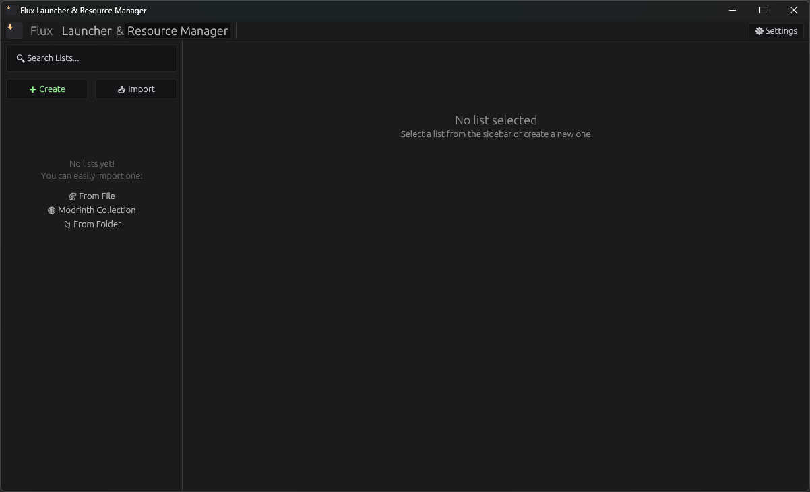
2. Start Your First List
You have two main ways to begin: Create a New List from scratch or Import an Existing Collection.
Option A: Create a New List (Recommended for beginners)
-
Click "➕ Create": Find this green button at the top-left of the sidebar.
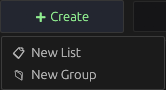
-
Configure Your List: A dialog will ask for essential details. These define which mods are compatible.
- Name: Give it a clear name (e.g., "My Survival Mods").
- Minecraft Version: Select your target Minecraft version (e.g.,
1.21.11). - Loader Type: Choose your mod loader (e.g.,
Fabric,Forge). - Download Directory: This is where Flux will save your files. You can leave the default.
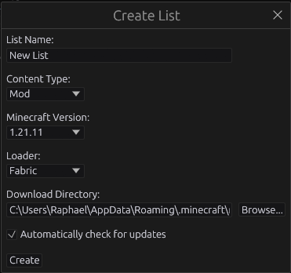
-
Confirm: Click "Create" to add your new, empty list to the sidebar.
Option B: Import an Existing Collection (If you have one)
If you already have an existing Minecraft folder or a Modrinth collection:
-
Click "Import": This button is at the top of the sidebar.
-
Choose an Option: Select "From File" (for
.mmdor legacy mod lists), "Modrinth Collection" (for a URL), or "From Minecraft Folder" (to scan an existing game folder). Follow the prompts to set it up.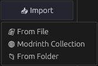
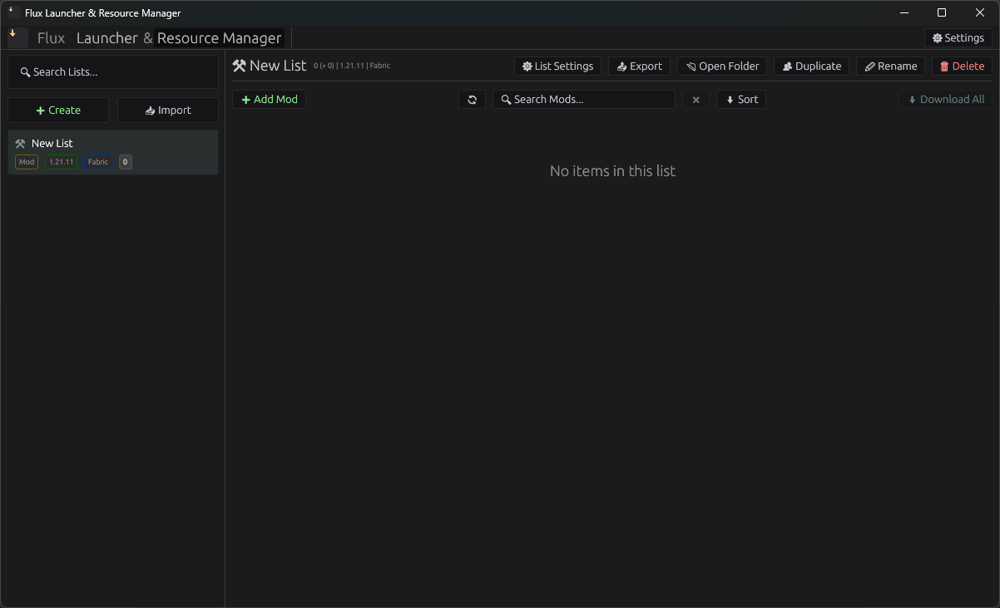
3. Add Resources to Your List
Now, let's find some mods! Flux connects directly to Modrinth.
-
Click "➕ Add [Resource Type]": In the main view, click the button (e.g., "➕ Add Mod"). This opens the Search Modal.
-
Search & Add:
- Type keywords (e.g., "Sodium").
- Results automatically filter for your list's Minecraft Version and Loader Type.
- Click the "Add" button next to each resource you want.
- Close the modal when done.
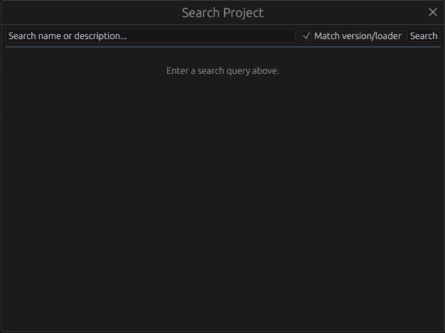
-
Resources Appear: The added resources will now be in your list, showing a
📁 Missingbadge.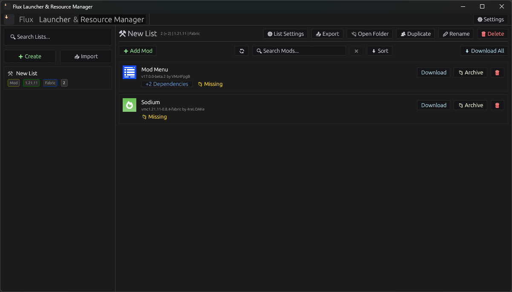
4. Download Your Resources
Time to get the files onto your computer!
-
Click "⬇ Download All": This button, found in the toolbar at the top right of the main view, will download all missing resources in your list.
-
Check Progress: The button changes to "⏳ Downloading...", and individual resources show progress.
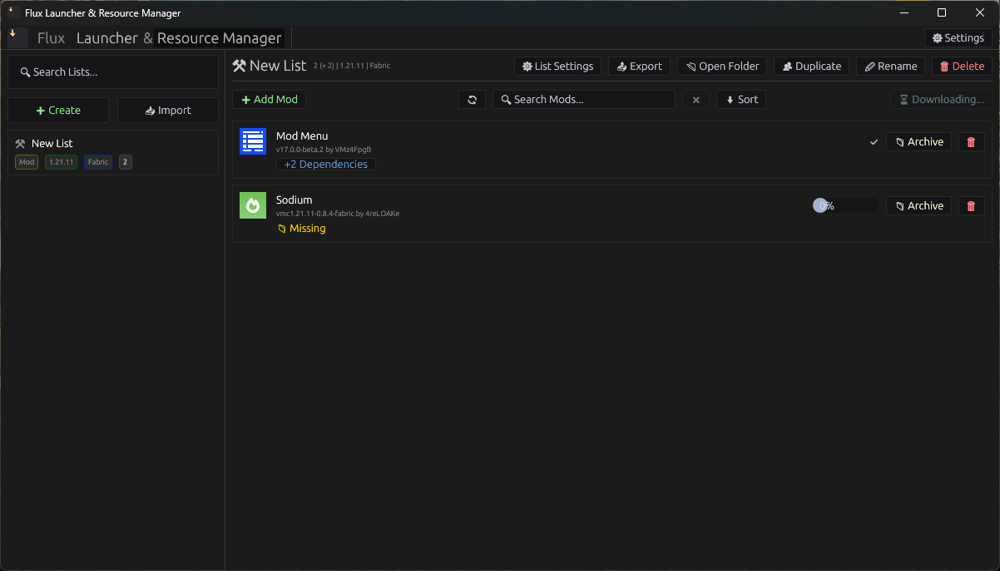
-
Finished!: Once downloaded, resources show a
✅badge, meaning they're ready!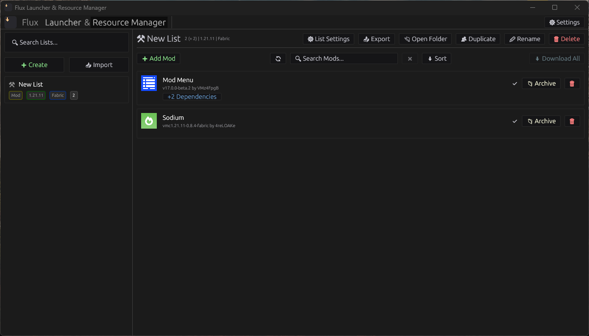
📂 Lists: Creating and Managing Your Collections
Lists are the fundamental building blocks within Flux's Resource Manager. Each list represents a self-contained collection of Minecraft resources (mods, shaders, resource packs, etc.) tailored for a specific Minecraft version and loader combination. Think of them as dedicated profiles for your different gameplay experiences.
Understanding the Lists Sidebar
The left sidebar of the Resource Manager is where all your lists are displayed and managed.
Each list entry provides a quick overview of its configuration:
- List Name: The user-defined name for your collection (e.g., "New List").
- Resource Type Badge (e.g.,
Mod): Indicates the primary type of content this list is designed for. While oftenMod, Flux supports others likeShader,Resource Pack, etc., though the current UI primarily showsModfor general resource lists. - Minecraft Version Badge (e.g.,
1.21.11): The target Minecraft version for this list. - Loader Type Badge (e.g.,
Fabric): The specific Minecraft loader (Fabric, Forge, Quilt, NeoForge, Vanilla) configured for this list. - Resource Count Badge (e.g.,
0or2): Shows the current number of resources installed in this list.
When a list is selected, it will be highlighted in the sidebar, and its contents will be displayed in the main view.
Creating a New List
To start a fresh collection of resources:
- Click the green
+ Createbutton in the top-left of the sidebar. - A dialog will appear (not shown in screenshots, but implied) prompting you to:
- Name your new list. Choose a descriptive name.
- Select the target Minecraft Version. This ensures compatible resources are suggested.
- Choose the desired Loader Type.
- If necessary, pick your preferred download destination.
- After confirmation, your new list will appear in the sidebar and be automatically selected.
Newly created lists will initially show "No items in this list" in the main view, ready for you to add resources.
Searching Your Lists
As your collection grows, you might have many lists. The Search Lists... input field at the top of the sidebar helps you quickly find a specific list:
- Type keywords into the search bar. The sidebar will dynamically filter, showing only lists whose names match your input.
- To clear the search and see all lists again, simply delete the text from the search bar.
Deleting a List
To remove a list you no longer need:
- Select the list you wish to delete from the sidebar.
- In the top-right action bar of the main view, click the
Deletebutton (red trash can icon). - A confirmation dialog will appear. Confirm to permanently remove the list and all its associated resources and configurations.
Warning: Deleting a list is irreversible and will remove all downloaded mods and configuration specific to that list. Ensure you have backed up any important data if necessary.
Next Steps
Now that you know how to create and manage lists, you can:
- Organize them further with Groups & Instances
- Import existing collections
- Add resources to your lists
👥 Groups & Instances
Flux provides powerful organizational features through Groups and Instances in the sidebar. These allow you to categorize your resource lists and manage dedicated Minecraft game setups more effectively.
What are Groups?
A group is a customizable folder in your sidebar that can contain multiple individual resource lists. Groups help keep your workspace organized, especially when you have many modpacks or different game configurations.
What are Instances?
An instance is a special type of group designed to manage a complete Minecraft game installation. When you convert a group into an instance, you can:
- Define a specific instance directory (
.minecraftfolder location). - Pin a particular Minecraft game version for all lists within that instance.
- All lists assigned to an instance will automatically use the instance's directory and game version as their default.
🏗️ Creating & Organizing Groups
-
Creating a New Group:
- In the sidebar, click the "➕ Create" button.
- From the popup, select "New List Group" (this option will be available when a group creation feature is implemented).
- A new, empty group will appear in your sidebar.
-
Adding Lists to a Group:
- You can drag and drop existing lists directly into a group in the sidebar.
- Lists can also be moved between groups or out of groups to the root level.
-
Viewing & Navigating Groups:
- Groups appear with a "➕" (collapsed) or "➖" (expanded) icon.
- Click the arrow or double-click the group's name to toggle its expanded state.
- A badge next to the group name shows the total number of lists it contains.
- If a group is an instance, it will display a "🎮" icon next to its name.
⚙️ Managing Group Settings
When you click on a group in the sidebar, its settings will be displayed in the main content area.
Group Header Actions
At the top of the main panel, you'll see the group's name and a set of action buttons:
- ✏ Rename: Click this button to rename the current group. An input field will appear, allowing you to type a new name. Press
Enteror click the "✔" button to confirm, or "❌" to cancel. - 👥 Duplicate: Creates an exact copy of the group, including all its assigned lists and their resources.
- 🗑 Delete: Permanently deletes the group and unassigns any lists within it (the lists themselves are not deleted, only their assignment to this group).
- ⬇ Download All / ⬇ Download Instance:
- If it's a regular group, this button is labeled "⬇ Download All."
- If it's an instance, it's labeled "⬇ Download Instance."
- Clicking this button will initiate the download of all missing resources across all lists assigned to this group (and recursively for any nested groups).
- While downloads are active, the button changes to "⏳ Downloading...".
- ⚙ Group Settings: (Not explicitly shown in code but implied by
ListGroupSettingsModal::new) This button will open a dedicated modal for group-specific configurations, such as toggling "Instance Mode" (described below).
Instance Configuration
If the selected group is an Instance, a dedicated "Instance Configuration" panel will be visible:
- Instance Directory:
- This field specifies the
.minecraftdirectory where all lists within this instance will download their resources. - Click the "📁 Browse" button to open a file picker and select a directory on your system.
- Note: If not set, it may try to infer a default based on your system.
- This field specifies the
- Game Version:
- A dropdown menu where you can select a specific Minecraft Java Edition version for this instance.
- All lists within this instance will default to this game version for compatibility checks and downloads.
- 💾 Save: Click this button to apply changes to the instance's directory and game version.
- Download Path Information: Below the save button, Flux provides a helpful overview of where different resource types will be downloaded within the specified instance directory (e.g.,
Mods ➡ <instance_directory>/mods).
Converting to/from an Instance
If a selected group is not an instance, you'll see a button:
- 🎮 Convert to Instance: Clicking this button transforms the current group into an instance, activating the "Instance Configuration" panel for it. All associated lists will then inherit its download directory and game version.
If it is an instance, the "⚙ Group Settings" modal would likely contain an option to revert it to a regular group.
🖱️ Productivity & Context Menus
Drag & Drop (DnD)
You can easily reorganize your sidebar using drag and drop:
- Move Lists: Click and drag a list to move it into or out of a group, or reorder it within the same level.
- Move Groups: Groups can also be dragged to reorder them or nest them within other groups (creating subgroups).
- Visual Feedback: While dragging, a blue line indicates the drop target and position (before/after an item or inside a group).
- Auto-Expand: Hovering over a collapsed group while dragging will automatically expand it after a short delay, allowing you to drop items inside.
Right-Click Context Menus
Right-clicking on a list group in the sidebar will open a context menu with quick actions, similar to those in the header, for that specific group (e.g., Duplicate, Delete).
📥 Importing Resources
Flux provides several ways to import existing resource collections or Minecraft folders, allowing you to quickly set up new lists without starting from scratch. All import options are accessible via the "Import" button in the sidebar.
💾 Import from File
This method allows you to import resource lists from various file formats. The behavior after selecting a file depends on its extension.
Supported File Types & Behavior
-
Flux List Files (
.toml,.mmd):- These are Flux's native or compatible formats for comprehensive list exports.
- Importing these files will directly create a new list based on the file's configuration and projects, preserving all details.
-
Legacy Mod List Files (
.mods,.all-mods,.queue-mods):- These are older, simpler text-based formats often used to list mods by their names or IDs.
- When importing these, a "Legacy Import Modal" will appear. This modal allows you to define the properties of the new list that will be created from these legacy entries.
-
Unsupported File Types:
- Attempting to import any other file type will result in an "Unsupported file type for import" notification.
How to Import
-
Click the "Import" button in the sidebar.
-
Select "From File" from the options.
-
A file dialog will open. Navigate to and select your
.toml,.mmd,.mods,.all-mods, or.queue-modsfile.- For Flux List Files (
.toml,.mmd): The list will be processed and added to your sidebar automatically. - For Legacy Mod List Files (
.mods,.all-mods,.queue-mods):- A modal window will appear, pre-filling a suggested List Name (usually derived from the file name).
- You must configure the Resource Type (e.g., Mod), Game Version, Game Loader, and the Download Directory for this new list.
- Click "Import" within the modal to proceed.
- For Flux List Files (
Import Process & Results (for Legacy Mod List Files)
- After configuring a legacy import, a progress modal may appear, showing the status of matching projects from the file to Modrinth's database.
- If any entries from the legacy file cannot be found or matched on Modrinth, they will be listed as "Unresolved" in the import results. You can then confirm the import (creating a list with only the resolvable items) or cancel the operation. Unresolved items will not be added to your new list.
🌐 Import Modrinth Collection
Importing a Modrinth collection allows you to easily set up a new resource list based on a collection curated on Modrinth.
How to Import
- Click the "Import" button in the sidebar.
- Select "Modrinth Collection".
- A modal window will prompt you to enter the Modrinth Collection URL or its unique ID.
- Example URL:
https://modrinth.com/collection/ZCxg7r1U - Example ID:
ZCxg7r1U
- Example URL:
- Click "Import".
Configuration & Finalization
- Flux will first load the collection's data from Modrinth. During this time, a "Loading collection..." message will be displayed.
- Once loaded, if the collection contains projects, you will enter a "finalizing" step:
- List Name: A default name based on the collection will be suggested.
- Resource Type: If the collection contains multiple resource types (e.g., both mods and resource packs), Flux will alert you. You can select one resource type for the current import, and then re-import the collection for other types if desired.
- Game Version / Game Loader / Download Directory: Configure these settings for your new list.
- Click "Import" again to create the new list with all matched projects from the Modrinth collection.
📦 Import from Minecraft Folder
This feature allows you to scan an existing Minecraft folder (e.g., your .minecraft directory or a specific instance folder) for installed resources and import them into a new Flux list.
The import process guides you through a few steps:
1. Select Folder
- Click the "Import" button in the sidebar.
- Select "From Folder".
- Choose the Resource Type you want to detect (e.g.,
Mod,Shader,Resource Pack). This helps Flux focus its scan. - Specify the Folder you want to scan. You can type the path directly or use the "Browse..." button to select it via a file dialog.
- Click "Import" to begin the scan.
2. Scanning
Flux will now scan the specified folder. This step involves:
- Identifying files matching the selected resource type.
- Attempting to resolve these files against the Modrinth database to find corresponding projects.
- Reporting progress on detected files and matches.
- Any errors encountered during the scan will be displayed.
Once the scan is complete, the modal automatically transitions to the "Review" step.
3. Review Detected Files
In this step, you can review the files Flux detected and their potential matches on Modrinth.
- File List: Each detected file is listed with its original filename, a cleaned-up name for easier identification, and the detected Minecraft version and loader.
- Match Status:
- Exact Match: If Flux finds a unique, strong match for a file, it will be automatically selected and marked "Exact Match" (green).
- Selected: If you manually choose a match, it will be marked "Selected."
- No Matches Found: If no matches are found, you'll see a "No matches found" (red) message.
- Actions for Each File:
- Change / Select Match: For files with multiple potential matches or to change an existing selection, click "Change" or the dropdown to select a different match from the list.
- 🔍 Search Manually...: If you don't find the correct match in the dropdown or if no matches were found, you can manually search Modrinth for the project. This will open a new search modal, pre-filled with the detected file name. Once a selection is made, you'll return to the review screen.
- ⊗ Skip this file: If you don't want to include a particular file in your new list, you can skip it. Skipped files are marked "Skipped" (gray). You can "Undo" skipping later.
- Show Unresolved: A filter button allows you to quickly view only the files that still require a decision (not skipped or selected).
Once all files are either skipped or have a selected match, the "Continue" button will become active, allowing you to proceed.
4. New List Settings
In the final step, you configure the settings for your new list, similar to creating a fresh list.
- List Name: Enter a name for your new resource list. By default, this will be the name of the folder you imported from.
- Resource Type: This will be pre-selected based on your choice in the first step.
- Minecraft Version: Select the target Minecraft version for this list. Flux may suggest a version based on its scan.
- Game Loader: Select the desired game loader (e.g., Fabric, Forge, Quilt). Flux may suggest a loader.
- Download Directory: Specify where resources for this list should be downloaded.
After configuring these settings, click "Import". Flux will create your new list, add all the selected projects, and then close the modal.
Toolbar & Search
The toolbar at the top of the Resource Manager's main view provides quick access to essential actions for managing your current resource list, including refresh options, search functionality, and bulk download/update actions.
➕ Add Resource
The "Add [Resource Type]" button (e.g., "➕ Add Mod", "➕ Add Shader") is the primary way to introduce new resources to your list.
- Clicking this button opens a Search Modal.
- Search Modal Usage:
- Enter your search query in the provided text field.
- You can toggle "Match version/loader" to filter results more precisely to your list's configured Minecraft version and loader (e.g., Fabric for 1.21.1).
- Once you find the desired project, click the "Add" button next to it.
- The selected project will then be added to your current list in the Resource Manager.
- Disabled in Offline Mode: This feature requires an internet connection to search Modrinth and is therefore disabled when Flux is in offline mode.
🔄 Refresh Files
The "Refresh" button (🔄 icon) initiates a scan of the list's configured download directory.
- Standard Click: Re-indexes the files on your disk to ensure Flux has the most up-to-date information on what's installed and its status. This is useful if you've manually added or removed files from the directory.
- Shift + Click: Performs a deeper refresh, re-indexing files and forcing a recalculation of all project dependencies. This can resolve issues where dependency status appears incorrect after significant changes or if you suspect data corruption.
💡 Spinner: While a refresh or scan is active, the refresh button will transform into a spinning icon (⏳) to indicate that files are being processed.
🔍 Search Resources
The search bar, labeled "🔍 Search [Resource Type]...", allows you to filter the displayed resources within your current list.
- Keyword Search: Type keywords to filter projects by their name. The search is case-insensitive.
- Include Dependencies: To extend your search to include the names of dependencies that projects in your list rely on, prepend your search query with an ampersand (
&).- Example:
&fabricmight show mods that require Fabric API, even if "fabric" isn't in their name.
- Example:
- Clear Search: Click the "❌" button next to the search bar to quickly clear your query.
⬇ Download All
The "Download All" button streamlines the process of getting all missing resources for your list.
- This button will appear as "⬇ Download All" when there are projects in your list that are not yet downloaded.
- Clicking it will queue all currently missing, unarchived projects for download.
- "⏳ Downloading...": While downloads are in progress, the button will change to indicate the active download status.
- Disabled in Offline Mode: This feature, like all Modrinth interaction, is disabled when Flux is in offline mode.
🔄 Update All
If your list has "Auto-Update Enabled" (configured in List Settings), this button will not appear. If auto-updates are disabled, the "Update All" button becomes visible when one or more projects in your list have a newer version available on Modrinth.
- Clicking "🔄 Update All" will attempt to download the latest compatible versions for all projects that are currently outdated.
- Disabled in Offline Mode: This feature is unavailable when Flux is in offline mode.
🗑 Delete X selected
This button appears when you have selected multiple projects in your list (using Ctrl/Cmd + click or Shift + click).
- The text will indicate how many projects are selected (e.g., "🗑 Delete 3 selected").
- Clicking this button will remove all selected projects from your list.
List Actions & Settings
When you have a list open in the Resource Manager's main view, a dedicated set of tools appears at the top right of the panel. These allow you to manage the list itself, including its configuration, duplication, and export.
⚙ List Settings
The "List Settings" button opens a modal window specific to the currently active list. Here, you can define critical parameters that affect how resources are discovered, downloaded, and managed for this particular list.
Configurable Options:
- Minecraft Game Version: The specific Minecraft version this list is designed for (e.g.,
1.21.1). - Game Loader: The mod loader required for this list (e.g.,
Fabric,Forge,Quilt). - Resource Type: Defines what kind of resources this list primarily manages (e.g.,
Mod,Shader,Resource Pack). - Download Directory: The local folder where resources for this list will be downloaded. This can be configured as a custom path or set to inherit from an instance group if the list is part of one.
- Auto-Update Enabled: Toggle whether installed resources in this list should automatically check for and apply updates.
After making changes, click "Save". The Resource Manager will then re-evaluate the list's compatibility and download status based on the new settings. You will also see the list's unique ID at the bottom of this modal.
📤 Export
The "Export" button allows you to save your current list of resources to a file, which can then be shared with others or used for backup.
- Upon clicking, a file save dialog will appear, prompting you to choose a location and filename for your export.
- Export Formats:
- Flux (
.mmd): This is the native export format for Flux, containing detailed information about your list and its resources. - Legacy Mod List (for
Modsonly): If you are exporting aModlist and choose a non-Flux format, Flux can export a simpler list that might be compatible with other mod managers.
- Flux (
📂 Open Folder
Clicking "Open Folder" will instantly open the configured download directory for the current list in your operating system's file explorer. This provides quick access to your installed resources for manual inspection or management.
👥 Duplicate
The "Duplicate" button creates an exact copy of the active list. The new list will appear in your sidebar with a similar name (e.g., "New List (Copy)"), containing all the same projects and settings as the original. This is useful for creating variations of a modpack or for testing changes without affecting your primary list.
✏ Rename
To change the name of your open list, click the "Rename" button.
- An inline text input field will appear, pre-filled with the current list name.
- Type in your desired new name.
- Press
Enteror click the "✔" button to confirm the rename. - Click the "❌" button to cancel the renaming process.
🗑 Delete
The "Delete" button, prominently colored in red, allows you to permanently remove the current list.
- Deleting a list removes it from Flux and unassigns any associated resource files, but it generally does not delete the physical files from your disk. This ensures you don't lose your mods if you simply want to remove the list from the resource manager.
Managing Resources
This section details how to add, manage, update, and remove individual resources (mods, shaders, etc.) within your active list. Flux provides intuitive tools and visual indicators to keep your game content organized and up-to-date.
Adding Resources
To add new resources to your list, use the "Add [Resource Type]" button prominently displayed at the top of the main content area.
-
"➕ Add [Resource Type]" Button: Click this button (e.g., "➕ Add Mod") to open the Search Modal. This modal allows you to browse and select resources directly from Modrinth, filtering by compatibility with your list's configured game version and loader.
-
Offline Mode: This button will be disabled and grayed out when Flux is in offline mode, as it requires an internet connection to search Modrinth.
-
Keyboard Shortcut: After typing your query in the Search Modal, you can simply press
Enterto trigger the search without clicking the button. -
Smart Filtering: Keep "Match version/loader" checked to ensure you only see projects compatible with your current list's Minecraft version and loader (Fabric/NeoForge/etc.).
The Reload Button
The "Reload" button (🔄) is a vital tool for ensuring Flux's view of your files is current with your disk.
- Standard Click (🔄): A regular click on this button triggers a re-indexing of files in your list's download directory. Use this if you manually add or remove files, or if you suspect the displayed status of your resources is out of sync.
- Shift+Click (🔄 + Shift): Holding
Shiftwhile clicking "Reload" forces a full recalculation of all project dependencies. This can resolve issues where dependency relationships might appear incorrect or if a mod's requirements have recently changed. - Loading Indicator: While files are being scanned or re-indexed, the button will change to a spinner icon (⏳) to indicate activity.
Auto-Update Mode
Flux offers an "Auto-Update" mode, configurable in the List Settings. This mode affects how updates are handled across your list.
- If Auto-Update is enabled: Flux will automatically select and download the latest compatible versions for your resources whenever available, ensuring your list is always current without manual intervention.
- If Auto-Update is disabled: A "🔄 Update All" button will appear if any resources in your list have a newer version available. You will also see individual "🔄 Update" buttons next to each outdated resource, allowing for granular control over updates.
Individual Resource Entries
Each resource in your list is displayed as an entry with its icon, name, version, author, and various status indicators and action buttons.
Resource Details
- Icon: A small icon representing the resource (e.g., a gear for Mod Menu, a cube for Sodium).
- Name: The name of the resource, often displayed as a hyperlink. Clicking the name will open the resource's page on Modrinth in your web browser.
- Version & Author: Displays the currently selected version (e.g.,
v17.0.0-beta.2) and the author of the project (e.g.,by Prospector).
Status Indicators
Next to each resource, you may see one or more of these indicators:
✅(Downloaded): Indicates the resource's currently selected version is present and matches its expected hash on disk.⏳ Downloading...(with Progress Bar): Shown when the resource is actively being downloaded or is in the download queue, along with a percentage progress.❌(Failed): Appears if a download or metadata retrieval for the resource failed. Clicking this button allows you to clear cached metadata and version data, prompting a re-attempt to load.📁 Missing: Indicates that the resource is part of your list and compatible, but its file is not currently present in the download directory. You will see a "Download" button to obtain it.🔄 Update Available: If auto-update is disabled and a newer version of the resource is found online, this badge will appear.❌ Incompatible: This resource is not compatible with the current game version and loader settings of your list.- "🔒 Overrule" Button: You can choose to force-enable the resource despite incompatibility warnings. Use this with caution.
⚠ Incompatible Overruled: Indicates that you have previously overruled an incompatibility warning for this resource.- "🔓 Revoke" Button: Click to revert the override, which will re-enable compatibility checks.
Dependency Management
Flux helps you manage resource dependencies:
+N DependenciesBadge: If a resource requires other mods to function, this badge will show the count of its required dependencies. Clicking this badge will expand the entry to display the dependent resources, indented below the main resource.- Dependent Resources: When expanded, dependencies are shown with smaller icons and indented, indicating their subordinate relationship. They generally inherit the status of their parent.
- Dependency Impact on Actions: Certain actions (like archiving or deleting) may be restricted if a resource is required by another. A tooltip will explain why the action is disabled.
Action Buttons (Per Resource)
These buttons appear on the right side of each resource entry, allowing you to manage individual items.
- Download / Update Button:
- If the resource is missing, a "Download" button (blue) will appear.
- If a newer version is available and auto-update is off, an "🔄 Update" button (light blue) will appear.
- These buttons are disabled if the resource is incompatible (unless overruled) or in offline mode.
- Archive / Unarchive Button:
📁 Archive(light yellow): Moves the resource to an "Archived Projects" section at the bottom of the list. Archived resources are not downloaded or loaded by the game but remain in your list for easy restoration.📂 Unarchive(light yellow): Appears for archived resources, moving them back into the active list.- Restrictions: This action is disabled if the resource has other projects that depend on it. A tooltip will inform you of the blocking dependencies.
- Delete Button (🗑):
- Light Red
🗑: For resources without dependents, clicking this button permanently removes the resource from your list and deletes its file from disk. - Orange
🗑: If the resource has other projects that depend on it, clicking this button will "demote" it to an auto-managed state (meaning it's kept in the list because others need it, but it's no longer considered a manually added project). Its file will remain on disk.
- Light Red
Unknown Files
Below your active and archived projects, Flux may display an "Unknown Projects" section.
- Purpose: This section lists files found in your list's download directory that are not linked to any known project in your list. These could be leftover files, manually placed mods, or files Flux couldn't identify.
- Expandable Section: Click the expand button (▶ / 🔽) next to "Unknown Projects ([Count])" to show or hide these files.
- "🗑 Delete All" Button: Available within the expanded "Unknown Projects" section, this button allows you to delete all unknown files with a single click.
- Individual Unknown Entries: Each unknown file is shown with a generic icon (❓), its filename, and a "No metadata available" label. An individual
🗑button is provided to delete that specific file.
🧩 Dependencies & Archives
Flux provides robust tools to manage project dependencies, archive unused resources, and clean up unassociated files, ensuring your Minecraft installation remains organized and efficient.
Managing Dependencies
Dependencies are other resources that a specific mod, shader, or pack requires to function correctly. Flux automatically detects and manages these relationships, simplifying the installation process.
Displaying Dependencies
When a resource in your list has required dependencies, a badge like +N Dependencies will appear below its name and author. The "N" indicates the number of other projects that are necessary for this resource to work.
Expanding and Viewing Dependencies
Clicking the +N Dependencies badge will expand the entry, revealing the list of required projects. These dependent projects are displayed with a slightly indented visual style and simplified interaction options, making it clear they are managed as part of their parent resource.
Dependency Handling During Actions
- Downloading & Updating: When you download or update a resource, Flux automatically attempts to download or update its required dependencies to compatible versions.
- Archiving: A resource that is required by another project cannot be archived. If you try, a tooltip will inform you which projects depend on it. This prevents you from accidentally breaking your mod setup.
- Deleting: If you attempt to delete a project that is required by others, the delete button's tooltip will change, indicating that deleting it will "demote" it to an auto-managed state. This means it will remain in your list (as an auto-managed project) because another active project still requires it, but it will no longer be considered a manually added item. To fully remove it, all dependent projects must first be removed or archived.
Identifying Missing Dependencies
If a listed project (or one of its dependencies) is not present in your download directory despite being enabled and compatible, it will display a 📁 Missing badge. This helps you quickly identify and resolve any missing files by prompting you to download them.
Archiving Resources
Archiving allows you to temporarily disable and hide resources without permanently deleting them. This is useful for testing different mod combinations or reducing clutter in your active list.
Archiving & Unarchiving Individual Resources
Each resource entry has "📁 Archive" and "📂 Unarchive" buttons.
- Clicking 📁 Archive moves the selected resource(s) to the "Archived Projects" section. This hides them from your main view and prevents them from being loaded into Minecraft.
- Clicking 📂 Unarchive restores the resource(s) to your active list. When unarchiving, Flux will attempt to scroll the restored item(s) back into view.
Important: You cannot archive a project that has active dependents. You must first remove or archive all projects that depend on it.
Archiving & Unarchiving Multiple Resources (Context Menu)
To manage multiple resources at once:
- Select one or more resources (use
Ctrl/Cmd+ click for multiple,Shift+ click for a range). - Right-click on any selected resource to open the context menu.
- Choose 📁 Archive Selected or 📂 Unarchive Selected to apply the action to all selected items.
Viewing Archived Resources
Archived resources are kept in a separate, collapsible section below your active projects.
- Click the ▶ Archived Projects (N) button to expand this section and view all currently archived resources. The "N" indicates the total count of archived projects.
- Clicking 🔽 Archived Projects (N) will collapse the section again.
⚡ Productivity & Shortcuts
The Flux's Resource Manager is designed to streamline your workflow with powerful productivity features, including multi-selection, context menus, and keyboard shortcuts.
🖱️ Multi-Selection
Managing many resources or lists can be tedious one-by-one. Flux provides familiar multi-selection methods to help you act on multiple items at once in both the main project list and the sidebar.
In the Project List (Main Panel)
- Select Single Item: Click on any project entry. This will deselect any previously selected items and highlight the clicked project.
- Select Multiple Items (Non-Contiguous):
- Hold
Ctrl(Windows/Linux) orCommand(macOS) and click on individual projects. Each click will toggle the selection status of that project (add if not selected, remove if already selected).
- Hold
- Select a Range of Items:
- Click on the first project you want to select.
- Hold
Shiftand click on the last project in your desired range. All projects between the first and last clicked (inclusive) will be selected. - If combined with
Ctrl/Command,Shift + Clickwill add the range to your existing selection without clearing it first.
- Clear Selection:
- Press the
Escapekey. - Click on an empty area within the project list.
- Press the
In the Sidebar (Lists & Groups)
Multi-selection in the sidebar works identically to the project list, allowing you to select multiple Lists or List Groups for bulk actions (e.g., deleting several items at once).
- Select Single Item: Click on any list or list group entry.
- Select Multiple Items (Non-Contiguous): Hold
Ctrl(Windows/Linux) orCommand(macOS) and click on individual sidebar items. - Select a Range of Items: Hold
Shiftand click on the last item in your desired range. - Clear Selection: Click on an empty area within the sidebar.
📋 Context Menus (Right-Click)
Right-clicking on items in the Resource Manager reveals context-sensitive menus, offering quick access to relevant actions.
Project Context Menu (Main Panel)
Right-click on one or more selected projects in the main panel to bring up options for those projects.
- Copy: Copies the selected projects to the clipboard.
- Cut: Cuts the selected projects, preparing them to be moved to another list.
- Paste: Pastes projects from the clipboard into the current list.
- This option is only available if there are compatible projects in the clipboard and the resource types match (e.g., cannot paste a Mod into a Shader list).
- If you "Cut" projects, pasting them here will move them from their original list. If you "Copy" them, pasting will create duplicates.
- Download Selected: Initiates the download of the latest compatible version for all selected projects that are currently missing.
- Update Selected: Updates all selected projects to their latest compatible versions. Only available when automatic updates are disabled and updates are detected.
- Archive Selected: Moves the selected projects to the "Archived Projects" section of the current list. Projects with active dependents cannot be archived.
- Unarchive Selected: Moves selected archived projects back to the active project list.
- Delete Selected: Permanently removes the selected projects from the current list and deletes their associated files from disk. Projects with active dependents cannot be deleted without first removing the dependents or making them auto-managed.
List Context Menu (Sidebar)
Right-click on a single list in the sidebar to access options for that specific list. If you have multiple lists selected via multi-select, right-clicking on any of them will open the context menu for all selected lists.
- Move to Group: A sub-menu appears, allowing you to move the list into an existing List Group or to remove it from any group ("No Group").
- Open Folder: Opens the download directory for the selected list in your system's file explorer.
- Duplicate: Creates an exact copy of the selected list, including all its projects and settings.
- Delete: Removes the list and all its contained projects from Flux.
List Group Context Menu (Sidebar)
Right-click on a single list group in the sidebar to access options for that group. If you have multiple list groups selected via multi-select, right-clicking on any of them will open the context menu for all selected groups.
- Create Subgroup: Opens a modal to create a new, nested List Group directly within the selected parent group.
- Rename: Opens a modal to change the name of the selected List Group.
- Duplicate: Creates a duplicate of the selected List Group, including all its subgroups and associated lists.
- Delete: Removes the List Group and all its contained subgroups and lists from Flux.
⌨️ Keyboard Shortcuts
Speed up your interactions with these handy keyboard shortcuts.
Delete: Deletes all currently selected items (Lists or List Groups) from the sidebar.Enter: Confirms renaming actions when an input field is active (e.g., renaming a list or list group).
⚙️ Resource Manager Settings
The Resource Manager Settings provide options to configure the overall behavior of the Resource Manager module, independent of any specific list or game instance. These settings help streamline your workflow, manage application data caching, and handle backups.
Accessing Settings
To open the Resource Manager Settings modal:
- Locate the
Settingsbutton in the top-right corner of the Flux window. This is the global application settings button. - Within the global settings, there should be a dedicated section or tab for "Resource Manager Settings." (The provided code snippet is for the modal itself, not its entry point in the main UI, but this is the logical user flow).
General Settings
These settings are designed to customize default names for new lists and groups.
Default List Name
- Purpose: Sets the default name that will be automatically assigned to any new list you create. This can save time if you frequently create lists with a common prefix or theme.
- Usage: Type your desired default name into the text field.
Default List Group Name
- Purpose: Sets the default name for any new list groups you create in the sidebar. Useful for organizing your groups consistently.
- Usage: Enter your preferred default group name into the text field.
Saving Changes
After making any adjustments to the General Settings, click the 💾 Save button to apply your changes. These settings will persist across application restarts.
Backup & Restore
This section allows you to export all your Resource Manager settings and lists into a single .flux-rm backup file, or import them from such a file. This is useful for migrating your data, sharing configurations, or creating restore points.
Export Backup
- Purpose: Creates a
.flux-rmfile containing all your current Resource Manager settings and lists. - Usage:
- Click the 📤 Export Backup button.
- A file dialog will appear, pre-filling a suggested file name (
flux-resource-manager-backup.flux-rm). - Choose your desired location and file name, then click
Save. - A progress indicator will show while the backup is being created.
Import Backup
- Purpose: Loads settings and lists from a
.flux-rmbackup file, overwriting your current configuration. - Usage:
- Click the 📥 Import Backup button.
- A file dialog will appear. Select the
.flux-rmfile you wish to import, then clickOpen. - A Warning Modal will appear, detailing the implications of importing a backup.
- Important: Importing a backup will OVERWRITE all existing Resource Manager settings and lists. Your current data will be replaced.
- The application will automatically reload all data after the import.
- Review the warning carefully. If you wish to proceed, click ✔ Yes, Import. If you change your mind, click ❌ Cancel.
- A progress indicator will show while the backup is being imported.
Backup Progress
While an export or import operation is in progress, a spinner and a message indicating the current status (e.g., "Exporting items (1/5)") will be displayed. The export/import buttons will be disabled during this time.
Advanced Options
The Advanced Options section offers more granular control, primarily focused on Cache Management. This section is collapsed by default to prevent accidental changes for most users.
To view and interact with advanced options:
- Click the ▶ Advanced button (or 🔽 Advanced if already open) to expand this section.
Cache Management
The Resource Manager extensively uses various caches to store downloaded search results, project metadata, icons, versions, and more. While this speeds up browsing and operations, sometimes a cache can become corrupted or outdated, leading to loading issues. Clearing specific caches can help resolve these problems, but be aware that the application will need to re-fetch that data, which may temporarily slow down operations.
Cache Types
You can selectively clear the following types of cache:
- Game Loader Cache: Stores information about available game loaders (e.g., Fabric, Forge, Quilt).
- Game Version Cache: Stores data on supported Minecraft game versions.
- Slug Cache: Caches project "slugs" (short, unique identifiers for projects) used for API lookups.
- Metadata Cache: Stores detailed information about Modrinth projects (descriptions, authors, tags, etc.).
- Versions Cache: Caches the available file versions for specific projects, filtered by game version and loader.
- Icons Cache: Stores project icons, both on disk and in GPU memory.
- Artifact Cache: Contains the downloaded
.jar,.zip, or other resource files themselves. - File Index Cache: An internal index of files found on your disk, used for fast lookup of installed resources.
Important Notes:
- Restart Required: If you clear the Game Loader Cache or Game Version Cache, you will need to restart Flux for the changes to fully take effect. The application will indicate this if you select these options.
- Re-fetching Data: Clearing any cache will require the application to re-download or re-index that specific data type when needed, which can cause a brief delay.
Clearing Cache
- Select Caches: Check the boxes next to the cache types you wish to clear.
- Confirm: Click the 🗑 Clear Cache button.
Once clicked, the selected caches will be cleared from disk and/or memory.
Testing Resource Manager
Summarizing what is tested and why each test method was chosen.
Methods
| Method | Used for | Why it fits |
|---|---|---|
| Unit tests (pure logic) | Domain utilities & parsers | Fast, deterministic, side‑effect free. |
| State-based tests | Business actions | Ensures multi-struct state transitions (e.g., RMState + AppConfig) stay consistent. |
| FS-simulated tests | Infrastructure / detection | Validates file/path heuristics safely using temp directories (TempDir). |
| Parsing-focused tests | Import / UI helpers | Import entry points mainly transform user input → data, we validate transformations without UI rendering. |
Coverage
Domain (Unit)
-
game.rs: version model- Channel classification (release vs snapshot)
- Stable ordering across formats (e.g.,
1.20 < 1.20.1; snapshots don’t outrank unrelated releases)
-
project.rs: project metadata & dependencies- Effective dependency type resolution (
effective_*) matches override rules - Derived names/filenames are deterministic and filesystem-safe
- Effective dependency type resolution (
-
project_list.rs: list invariants- Dependency → project promotion preserves links and semantics
- Archiving/removal respects “still required” constraints; invariants remain valid
Business (State-based)
-
list_actions.rs: list operations- Instance settings inheritance / application stays consistent
- Hierarchical operations (move/delete/update) don’t orphan children; ordering is updated
-
list_group_actions.rs: group tree operations- Duplication produces new links/IDs (no aliasing of original nodes)
- Parent/child relationships remain consistent and UI order stays in sync
Infrastructure (FS-simulated)
resource_detector.rs: detection heuristics- Version hints are extracted from real-world filenames
- Normalization (spaces,
+, URL-encoding) doesn’t change detection results
Import / UI helpers (Parsing-focused)
-
lists_manager.rs: MMD import- TOML/MMD deserialization yields valid domain objects
- IDs/paths are sanitized (no collisions; sensible fallbacks)
-
import_modal.rs/legacy_import_modal.rs: name extraction- Extensions are stripped correctly
- Edge cases (hidden files, empty input, trailing separators) return safe defaults
-
modrinth_collection_import_modal.rs: URL parsing- Query params/fragments are ignored
- Valid collection IDs are extracted; invalid input is rejected cleanly
Quality Properties
- Deterministic: no reliance on real user data or global state
- Isolated: each test owns its state/temporary directory
- Regression-oriented: covers the highest-risk flows (group/list operations + imports)
AI USAGE IN THE PROJECT
MAXIM
- Claude Opus 4.5 – Learning, code review, debugging, drafting
- OpenAI Codex 5.3 – General coding assistance across the project
All generated output was reviewed, audited, and adapted to project requirements.
RAPHAEL
Learning
- Rust: T3 Chat²
- Libraries Used: T3 Chat², GitHub Copilot
Code-Related Tasks
- Full-line Completion: GitHub Copilot, JetBrains Full-Line Completion¹
- Refactoring (for tedious and simple tasks): GitHub Copilot
- Drafting: GitHub Copilot, T3 Chat²
All generated code is audited and corrected.
MARCUS
Learning
- Assistance: GitHub Copilot, Perplexity AI
Code-Related Tasks
- Full-line Completion: GitHub Copilot, JetBrains Full-Line Completion¹
- Refactoring (for tedious and simple tasks): GitHub Copilot
- Drafting: GitHub Copilot, Perplexity AI
All generated code is audited and corrected.
LARA
Learning
- Rust: ChatGPT
Documentation Tasks
- Proofreading: ChatGPT
¹ JetBrains Full-Line Completion is mostly overwritten by Copilot, but mentioned for completeness. ² An AI Chat App offering access to nearly every known LLM.
💬 Frequently Asked Questions
Is Flux free?
Yes. Flux is free to use.
Is there any monetization planned?
No. There are no plans for ads, subscriptions, or "premium" features. It is a tool built by the community, for the community.
Can I download mods from CurseForge?
Currently, Flux focuses on the Modrinth API for its speed and open nature. Support for other platforms is not planned at this immediate time.
Does it support cracked accounts?
Flux allows the use of offline/cracked accounts. However, we do not recommend using them as they lack official security features and do not support official multiplayer servers.
How can I submit a feature request?
We welcome community suggestions! You can submit a feature request by opening an issue on our GitHub and selecting the "Feature Request" template.
Which operating systems are supported?
Flux is designed to be cross-platform and is available for Windows, macOS, and Linux.
How do I report a bug?
Please open an issue on our GitHub repository with as much detail as possible, including logs and steps to reproduce the problem.
Are other languages supported?
Currently, Flux is only available in English. We may consider adding support for additional languages in the future based on community interest.
Is the source code available?
Yes. Flux is open-source. You can view, audit, or contribute to the code on our official GitHub Repository.